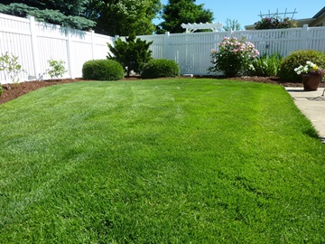
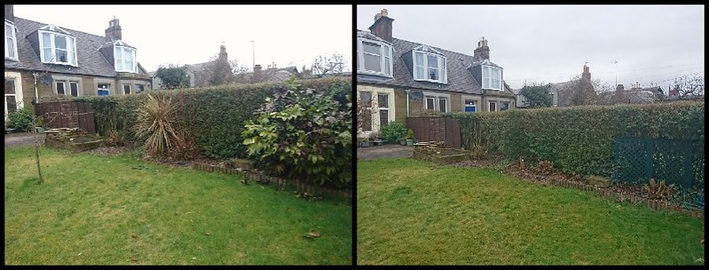

Lawn Mowing Services
Maintaining an immaculate lawn requires more than just a lawnmower. Our team of skilled professionals employs state-of-the-art equipment to ensure a precise and even cut every time. Whether you have a sprawling estate or a cozy backyard, our precision lawn cutting services will leave your grass looking pristine and inviting.
Landscape Design and Maintenance
Transform your outdoor space into a captivating oasis with our comprehensive landscape design and maintenance services. Our experts collaborate with you to understand your vision and create a customized plan that aligns with your aesthetic preferences and practical needs.
From seasonal flowerbed arrangements to installing irrigation systems, we go beyond basic lawn care to elevate your property's curb appeal. Our landscape design services include:
- Plant Selection and Installation: Choose from a wide variety of plants, shrubs, and trees to enhance the natural beauty of your lawn.
- Hardscape Elements: Incorporate pathways, patios, and other hardscape features to add functionality and style to your outdoor space.
- Irrigation Systems: Ensure your lawn stays healthy with efficient irrigation systems tailored to your landscape.
- Regular Maintenance: Enjoy a hassle-free experience as we take care of ongoing maintenance, including fertilization, pest control, and seasonal cleanups.
Before and after
